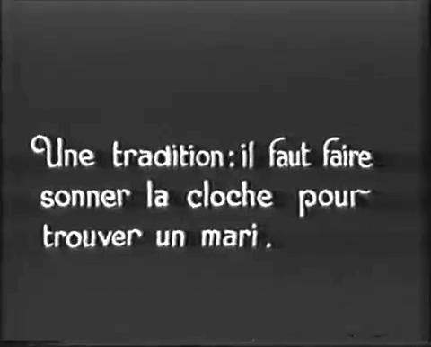
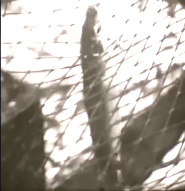
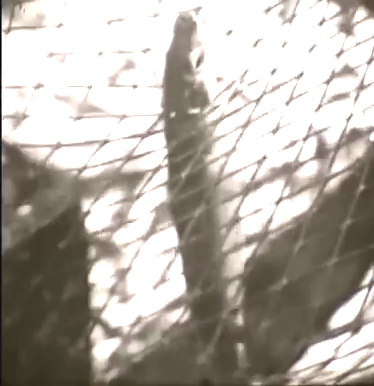

The Documentary
The popularity of the newsreel tended to further discourage any more serious reportage based on topical news The Gaumont film of the Portuguese revolution discussed earlier is actually quite unusual in the interesting "documentary" element it contains. The documentary "view", on the other hand, continued to flourish. For 1910, as for the preceding years, a great many of the Pathé documentaries are known from later home-view Pathé-Baby versions which were produced not on the standard 35mm film but on (uninflammable) 9.5mm film and were nearly always much abbreviated versions of the original. Here are some of the Pathé films from 1910 that were re-released in the new format during the 1920s: 1909 Promenade historique à Versailles Une promenade dans les gorges du Tarn København i sneEn Camargue - Course de taureaux à Saintes Maries
Sad though it is not to have rather more of the films available at their original length or, in many cases, in their original
colour, all film-lovers are greatly indebted to the "nine-fivers", who so assiduously collect and make available the home-view
versions. These films are available to view in the splendid Princeton
collection of Pathé-Baby films.
Touristic Films
Of the Italian companies, Cines made La regione del Fucino, Viaggio in Abruzzo , Panorama di Brindisi , Viaggio in Sardegna, Monumenti della campagna romana - La via Appia, Feste popolari al santuario di Montevergine, Lago di Como and La festa dei gigli a Nola as well as covering the Messina earthquake (Il terremoto di Messina e Calabria, Arrivo a Napoli del 'Catalogna' con i feriti del terremoto di Messina e Reggio and Messina distrutta). It also filmed outside Italy (four films of an Escursione in NorvegiaAmbrosio covered several sporting events (Corse a Mirafiori, Concorso ippico a Torino, Regate sul lago d'Orta), but produced ltttle in the way of touristic films. Lo stretto di Messina was made less for touristic reasons than because of the major eathquake that took place there ion 28 December 1908, ane evnt echoed in other films, both factual (,i>Disastro di Reggio e Messina and fictional (L'orfanella di Messina). Torino sotto del neve reflected a fad for winter landscapes.Aquila covered a baby-show at Torino (Concorso di bellezza fra bambini a Torino. Itala produced Isole vulcaniche napoletane, Nella maremma toscana Fontane di Roma and Animali nella campagna romana as well as La strega di Siviglia (Sevilla, Spain). SAFFi-Comerio produced , Cascades d'Italie, Le cascate delle Marmore, Le cascate di Caserta Cascate di Tivoli. Volcan d'Italie but also Da Goeschenen ad Andermatt (SWis Alps), L'isola di Malta,Jaffa, I>En Egypte and Attraverso la Mesopotamia. It also covered the Messina disaster with Il terremoto calabro-siculo and La ricostruzione di Messina. THe newcomer, Latium (formerly Società Italiana Pineschi, which had no backgrund of documentary film-making), produced Roma antica and two scenes in colonial Africa (Carovana in Tunisia and Combattimento di cammelli a Tripoli AlsoThis more whimsical, less matter-of-fact approach became commoner as the decade progressed. Although Moreau is not credited and even though this time no editor is mentioned, it does seem probable on stylistic grounds that this film (whichever film it may be) was also by him.
Pathé-Baby films were usually edited by the original cinematographer (when available) - occasionally credited in the films as « composition et cinégraphies » - and the work of editing usually only given to other photographers or photographic firms when the original cinematographer was, for whatever reason, no longer available (credited just as « composition ». The Venice films, especially that of the canals, bear a strong resemblance to a rather similar pairing shot in Bruges by René Moreau. Moreau was one of Pathé's principal (but uncredited) documentarists at this period but left in the early twenties to work for his own independent company (Films René Moreau). There seems therefore a reasonably strong probability that at least one (the second) of these films of Venice is also by him. He would go on to have a reasonably distinguished (albeit still little recognized) career,
Venise, la Ville de l’eau, émerge triomphante au-dessus de ses lagunes et de ses canaux sillonnés de gondoles, avec ses rues étroites, coupées de degrés d’escaliers et d’arches de pont et son invraisemblable éclosion de clochers, de campaniles, de dômes et de palais. (Pathé catalogue 1910)
René Moreau (?), Venise et ses mounuments (Pathé, 1910)
Venise, ancienne cite des Doges, ville enchanteresse, se découvre a vos yeux et vous émerveille par la magnificence de ses monuments : le palais des Doges, le lion aillé de Saint-Marc, l'enfilade des Palais sur le canal, etc. (Pathé-Baby Catalogue 1930)
Venice, the city of water, emerges triumphamt above its lakes and canals bristling with gondolas, with its narrow streets, dotted with flights of steps and bridge-arches and its incredible myriad of belfries, chimes, domes and palaces, (Pathé catalogue 1910)
Venice, ancient city of the Doges, enchanting city, reveals itself before our eyes marvelling at the magnificence of its monuments: the palace of the Doges, the winged lion of San Marco, the succession of palaces overlooking the canal, etc. (Pathé-Baby Catalogue 1930)
Venice was as much a favourite of cinematographers as it was of tourists. The Lumières had
In French the word « cliché » is itself commonly used as a synonym for "photograph" (a little like the English slang term "snap"), but even postcards in practice were of a bewildering variety.
Nevertheless films, like postcards and guidebooks, did serve to some extent to reinforce the increasingly stereotyped images that people had of the world, particularly of those places at home or abroad that had already become, or, in the case of the great Italian cities, had already long been, favoured destinations for tourists. Before dismissing such stuff too lightly, one should however bear in mind that the "serious" art of the period reproduced images that were little different from those in the picture-postcards and the films. Giovanni Canal dit Canaletto (1697-1768) and his contemporary Franceso Guardi (1712-1793) were churning out "stereotypical" vedute of Venice not long after the invention of the sterotype itself (c.1700-1725) but long before films or postcards even existed.
Three other films were made in Italy during the year, Florence and Das la baie de Naples as well as Ça et là en Sicile, shot in what the catalogue describes rather tweely as « ce riant pays » ("this laughing country"). Apart from such obvious tourist locations, the Pathé films toured France and the world (very much following the pattern set by the Lumières in the pioneering years 1896-1900). In 1910 Pathé operators were filming in Boulogne, Brittany, Normandy, the Pyrenees, Nice and the Côte d'Azur, the Ariège, the Aveyron, the Landes but also in the Channel Islands (Jersey), in Antwerp and Bruges, Naples and Sicily, Germany, Switzerland, Austria, the Netherlands, Scotland, Norway, Finland, Russia, Australia, Tasmania and the Pacific Ocean, Egypt, China, Japan, Chile and even the Arctic. in various parts of the French Empire (the Maghreb and sub-Saharan Africa, French Indo-China). Imperial borders were no bar to the cameras and films were also made in British India, Burma, Malaya and Singapore, and the Dutch East Indies.
Another of the rare Pathé operators making documentary films whose name has come down to us was Jean Nédelec who worked for the company 1909-1914 and seems to have acted as their man with the movie camera in Scandinavia. Amongst several films that he made in 1910, the six-minute À travers les fjords norvégiens, originally hand-coloured, survives in an abridged form, not this time in a 9.5mm copy made for the Pathé-Baby but in a 28mm film made for the Baby's predecessor, the Pathé Kok, which was first marketed in 1912. This copy appears on another very useful youtube site specialising in films made for home-view projectors, THE SILENT MAN projecting into the past, where it is spliced with another Kok film, Barcelona and Its Park, edited highlights from
Pathé-Baby released two companion films of the city of Bruges (Bruges-la-Morte (les monuments) and Bruges-la-Morte (les canaux). The two are seemingly drawn from different originals shot in different years. The first, the eight-minute Bruges-la-Morte was shot in 1910 and the second, Les Canaux de Bruges-la-Morte, a six-minute film originally hand-coloured. in 1915. Both are the work of René Moreau (credited as cinematographer for both Pathé-Baby films) and in reality both probably do in fact derive from the same original film of 1910. There was seemingly a third film called simply Bruges in 1917 but this would appear from the descriptions to be simply a slightly shorter (six-minute) hand-coloured version of the 1910 film, remade presumably because of its popularity but also to make a symmetrical pairing with the 1915 film, which included those scenes from the original film devoted specifically to the canals.
For the popularity of the 1910 film the notices in Moving Picture World when the film appeared in the US are eloquent even if the first is essentially publicity and largely just translated the description in the Pathé catalogue:
Quaint old Bruges is one of the Dead Cities of Belgium, and after the canals the mediaeval aspect of the town is its most striking feature. Interesting specimens of Flemish architecture of the Middle Ages are to be met with at every turn. The canals, which both surround and intersect the town, are always picturesque and interesting, and often very beautiful. The Minnewater or Lac d'Amour, a beautiful sheet of water, upon whose scarcely rippled surface the reflection of the bridge which spans it is always clearly outlined, is well known to tourists, as also is the Belfry with its famous chimes. Other objects of interest are the Beguinage Bridge, the Hotel de Ville or Town hall, the old King's Palace, and the Maison du France. A picture of one of the weekly markets held in the Grande Place beneath the shadow of the Belfry is included in the film, the lack of animation displayed being characteristic of the whole life of the town. The last picture of the film is a typical one of pillow lace-makers at their doors busily manipulating their bobbins in the manufacture of Bruges' lace.
René Moreau, Bruges-la-Morte (Pathé, 1910-1917)
A leisurely trip around this old city, delightful in its semi-calm and offering no end of picturesque opportunities for the tourist who cares for memories of the past. Some of the more important bridges are shown and there are glimpses along its canals which are attractive pictures. Another view is of the market place, reproducing the slow movements which are characteristic of the inhabitants of Bruges. It is one of the most delightful reproductions of city scenes which has come from any studio in months. The serenity of the people and the quiet of all the scenes are alike attractive and charming. Conditions in this city are so different from what they are in ordinary cities that it acquires additional charm. The work is well done and the selection of view points by the operator was admirably made. The picture will linger long in the memory. (5 November 1910)
These are the French catalogue descriptions for the 1915 and 1917 films respectively. It seems from these that the 1917 film simply omitted scenes of the canals (used for the 1915 film) and added scenes of the fortifications, not mentioned in the earlier description.:
Bruges, avec la physionomie du Moyen Âge qu’elle a gardée, présente des aspects très pittoresques et surtout des trésors artistiques qui lui donnent le plus haut intérêt. Parmi ses monuments, remarquons les Halles, le plus ancien monument de la puissance commerciale de Bruges et qui datent du XIIIe siècle. Sur le milieu de la façade principale s’élève le beffroi qui, haut de 80 mètres, renferme un beau carillon ; l’Hôtel de ville, reconstruit en 1376 ; le Palais de Justice, bâti en 1722, sur l’emplacement de l’ancien hôtel du Franc de Bruges etc. L’industrie la plus active est celle de la dentelle, dont on enseigne la fabrication dans une douzaine d’écoles spéciales. (1910)
Bruges, with the medieval look that it has retained, presents very picturesque aspects and above all artistic treasures that make it especially interesting, Amongst the sites, we notice les Halles (the market), the oldest reminder of the commercial power of Bruges, whose main façade is surmounted by the belfry, 80 metres high, containing the beautiful carillon; the town-hall, rebuilt in 1376; the Palais de Justice, built in 1722, on the site of the former mansion of Franc de Bruges etc. The most active industry is that of lace, the making of which is taught in some dozen special schools. (1910)
René Moreau, Bruges-la-Morte (Pathé, 1910-1917)
Bruges est la ville de Belgique qui a le mieux conservé la physionomie caractéristique du moyen âge. On y rencontre presque à chaque pas de vieilles demeures féodales couvertes de sculptures d’une bizarrerie charmante. Ses rues propres, étroites, irrégulières, sont bordées de maisons de bois et de maisons dites « à l’espagnole »,ayant pignon sur rue et pignon à gradins ; les édifices anciens que l’on rencontre çà et là sont remarquables et communiquent à la ville un cachet archaïque très pittoresque mieux caractérisé encore par les fortifications, entourées de fossés datant du Xe siècle. Les bords du canal de Bruges offrent de jolis points de vue par les pittoresques constructions qui se mirent dans ses eaux. L’industrie la plus florissante est la dentelle, universellement renommée, dont on enseigne la fabrication dans une douzaine d’écoles spéciales.
Bruges is the Belgian town that has most retained the characteristic look of the Middle Ages. Nearly At every turn one encounters old feudal mannsions, adorned with charmingly bizarre sculptures. Its streets, clean but narrow and irregular are lined with wooden houses and with houses in the style known as “à l’espagnole”, with gabled rooves overlooking the street and crow-stepped gables; the ancient buildings one encounters here and there are remarkable and give the town a very picturesque archaic feel, even better demonstarted by the fortifications, surrounded by moats, dating from the tenth century. The banks of the canal in Bruges offer attrative vantage-points for observing the picturesque buildings reflected in the water. The most flourishing industry is that of lace, for which it is universally renowned, and the making of which is taught in some dozen special schools. (1916)
The strategy pursued in linking the two films in the 1920s is exactly the same as in the case of the two films shot in Venice. The object of dividing films in this way was in part to give the customer a choice of viewing them together or separately as they wished. The first clip below has the two films combined as a "two-part" film while the second, although announcing still that it is a two-part film, has just the second part. The second part, like >the film of the Venice canals, highlights the poetic, evoking the work Georges Rodenbach (specifically mentioned in the catalogue), the symbolist poet and novelist whose 1892 novel Bruges-la-Morte is the origin of the town's nickname used in the title of the film. It is also entirely conceived as a "ghost ride" aboard a boat (« parasseusement entrainés », "lazily carried along", as the catalogue has it).
The title and the evocation of Rodenbach mean also that this film has a certain political significance that is not obvious to a modern viewer. Rodenbach's novel was a passionate defence of the traditional and the identitaire against the tide of urban development and "cosmopolitanism" (a word frequently, but not invariably, used during the period as a racist, normally anti-semitic, euphemism, news being the most conspicuous representatives of a specifically urban - if scarcely altogether modern - population that could be seen as both alien and parasitic). Rodenbach had strongly opposed the building of the new town of Zeebrugge (Bruges-sur-Mer) and his novel remained an influential symbol of such resistance to change.
Pathé in its documentaries pursued two seemingly, but only seemingly, contradictory "politics" - one of "modernity" (associated particularly with modern farms, modern factories etc) and one of nostalgia (which is actually itself a kind of disguised modernity because of its association with tourism). In this film, there is a very deliberate pursuit of the nostalgic (and I would not be at all surprised if it involved a certain amount of fakery à la Flaherty). This nostalgic, politically reactionary aspect is often present in the more touristic films, contrasting with the reverse (the emphasis on machination and technological innovation) that is a marked component of the "industrial" films. This ambiguity about progress and social diversity (still of course very much with us today) is a constant subtext of virtually all documentary film-making, as it is equally of so many of the fictional photoplays, of the period.
|  |
|---|
There is a third Pathé-Baby film extant,

|
|---|
Pathé was not the only company making films in Bruges at around this time. Gaumont, Pathé's benign shadow, made a similar pair of films there in 1911-1912, Bruges (1911), shown in the US as Panorama of Bruges the following February. This was "a dainty, delicate-tinted series of Flemish views", according to Moving Picture World "showing the principal sights of the ancient town of Bruges. Views of the picturesque canals, the lace workers, milk maids and men with their dog-driven mini-carts make this picture educationally valuable". A second Gaumont film, whose original title is unknown, appeared in the US in October 1912 as Bruges, the Venice of the North ("This film treats of the island city whose pretty canals and deep azure of its skies, rival the queen of the Mediterranean". The Italian company Cines also made a film there in 1914, shown in the US in 1915 (27 February), the same year as the 1915 Pathé film appeared there (13 September), distributed by The Photocolor Film Company (a Pathé front-company) as The Waterways of Bruges.
Bruges, Before the War, shown in the US on 20 January 1918 by Pathé Exchange in Pathécolor (simply a renaming of the familiar hand-colour/stencil process), is almost certainly yet another re-edition of the Moreau film(s), presumably the 1916 version, released on a split reel with one of Pathé's more sentimental natural history films In Blossom Time. The nostalgia was presumably rendered even more poignant by the horrors of the intervening war (in which Zeebrugge had played an important role). The recently-founded (1916) Educational Films Corporation of America's People of Old Bruges (1921-1922) presumably exploited the same rich vein, very possibly just recycling the French footage available. In 1920 the wunderkind Austrian composer Erich Korngold (1897-1957) adapted the Rodenbach novel as an opera, Die tote Stadt with text by his father Julius (under the name Paul Schott). To complete the cycle Belgian film-maker Paul Flon made a morbidly sentimental photoplay set in the town,

|
|---|
The colour version of this film has apparently been "restored" - it sounds to me more like a tulipless, colourised version of the black and white copy - and been ascribed it to Alfred Machin, presumably on the rather slender basis that Machin would later make films for Pathé in the Netherlands but Machin, who had just returned from filming in Africa, was then sent by Pathé to shoot comedies involving animals he had collected there at Pathé's Comica studios on the Côte d'Azur in company with Roméo Bosetti. He did make a film in Belgium
Zeeland, where this British Gaumont film was shot, was another happy hunting ground for the film-makers. Handomesly hand-coloured, it shows another batch of pretty clog-shoon Dutch schoolgirls. The war, far from from cooling the ardour for such nostalgia, seems, if anything, to have fanned its flames. Pathé was also filming both in Volendam (again) and Zeeland
There is no certainty when this film in Luxemburg was shot. It appeared in Pathé Revue in 1922 and then on 9.5mm for the Pathé-Baby but is may well originally be a pre-war film and there is some reason to suppose it might have been shot in or around 1910. Whereupon hangs a tale that is quite revealing of the importance not only tourist documentaries but any film shot in a particular locale might have for the community there. Tourism was fast changing the world and the revenue it generated could transform the economy of any place, however insignificant or remote. The Grand-Duché de Luxembourg had a population fo 250, 000 in 1910, the town itself a population of just over 20,000. It was largely rural and not by any means the wealthy enclave that it is today. Its first permanent cinema had been established
After all this soft soap, when the four films were shown at the Royal Bio Comp. at the Hôtel Luxembourg in September-October, probably the swank new 600-seater Kinematograph-Theater built that same year by the Medinger-Kohler, they proved something of a disppointment to the asembled luxembourgeois.
Decroix and his unit had already long gone and the films were already on general release, although, curiously, all but one under different titles from those by which they were known in the Grand-Duchy. The luxembourgeois were pleased enough to see familiar landmarks on show in the films but dismayed to discover that there was no way by which the potential foreign tourists could know where it was that the films were set. One (Le Guide or Der Fremdenführer) was even supposed to be set in the Swiss Tyrolean Alps). Le Séducteur (actually released as Haine implacable) had been filmed in the most picturesque spots in the suburbs of Grund and Pfaffenthal;Le Tronc or Die Baumhöhle (actually released as Affaire d'honneur had been filmed in the fish-market, in the Trois Glands (a park and fort), in Pfaffenthal, by the river Alzette and around the très pittoresque chapelle de Saint-Quirin; Le Guide, the mountain murder-mystery set in Switzerland, had been filmed in the region of Müllerthal, on the place de Glacis, by the entry to the Volkhaus (a Catholic church), at those Trois Gands again and on the rocks of the Côte
Rather the same thing occurred in September 1913 when another Pathé film-unit came to shoot an epsiode in the Nick Winter detective series entitled Nick Winter et le mystère de la Tamise, shot this time in the towns of Bollendorf and Asembourg, at the château de Dommeldange and in the garden of the spa of Mondorf. It was enthusiastically received when shown in Luxemburg in December and the press waxed lyrical once more about its publicity-worthiness (« Reklamewert für die Naturschönheiten unseres Landes » but could not there be some indication that these places were in Luxemburg? The film company pointed out, perhaps a shade tartly, that this might detract somewhat from the desired illusion that he film was set in England.
Wendel Marzen
Within France itself, Brittany was a favourite focus for such touristic films.
The film of Saint-Malo is especially interesting. It is not really a touristic film in quite the same manner as those considered above. It has, certainly, touristic elements but it differs in two important ways. For one thing it contains footage of working life (fishing, sculpture), a brief shot of naval installations and it contains a little story of sorts concerning a local sailor who has returned from working in the cod-fisheries of Newfoundland to settle down with his sweetheart. The film in other words aims at giving a picture of the town - and the original film was twice the length - as well as mingling fact with semi-fiction. It also personalises (from the implied point of view of the two lovers) and subjectivises the viewpoint (as far as the viewer is concerned) by presenting « panorama » - a series of shots in a kind of "binocular" oval iris, as though viewed through « une jumelle marine » ("skipper's spyglass" in the English).
Here in effect we have an early example in miniature of what might be called "a city symphony", albeit somewhat whimsical and sentimentalised and on a much smaller scale, a genre that would become one of the most typical and most dynamic forms of the documentary film at the height of its glory in the 1920s. There are some signs that the 1910 film, although, at just five minutes, fairly short even for that date, was regarded as having some importance. As early as about 1912, it had already appeared separately as a 28mm film for the earlier Pathé home-view system, the Pathé Kok, probably at its original length, since Koks were a shade longer than the later Babies and for the Pathé-Baby in the twenties it was retitled Saint-Malo: antique cité des corsaires. This title does not really reflect the film - which makes no mention of corsairs - but is probably more to do with the fact that the Pathé-Baby catalogue also contained, at least by the 1930s, Surcouf, the
None of the various accounts of the film, not even that in the Pathé-Baby catalogue, describes its unusual narrative element; precedence is given everywhere to the touristic aspects - the fortifications, the castle, "the quaint little houses" (US Pathécope catalogue) and the narrow streets of « la vieille Bretagne bretonnante » ("unadulterated old Brittany" in the English version). The 1918 Pathéscope catalogue (this was the US subsidiary that distributed the 28mm films, not the later British company of the same name that distributed the 9.5mm films) does however highlight the "panorama viewed through a field glass" but, in what would seem almost like a contradiction in terms, claims that this contributes to making the film "a genuine old world picture", whatever on earth that might be. Since the Kok had very definite educational ambitions, viewers are also directed to volume 20 of the New International for further reading about the French seaport.
The cinematographer is unknown but this is another example of a film that was farmed out for editing in the absence of it original maker - in this case to Mlle G. Jousset, who ran a camera and phototographic company and did a great deal of editing work for the Pathé-Babies. Since René Moreau was evidently something of the man of the year at Pathé, and since we know he was no longer with Pathé after 1921, it is tempting to ascribe this film to him as well. The film starts with a quotation from Chateaubriad (born in the town), which is typical enough of a Moreau film and contains several of the nostalgic references to which he was prone. He also filmed in Brittany on his own account in the twenties and, although his name is not Breton, he may conceivably have been a native or more probably, like other later film-makers - Jean Epstein springs to mind - simply had a cinematographer's love affair with the place. On the other hand, this may be the work of yet another "unsung hero", or, who knows, "unsung heroine", of early film of whom we know nothing.
This was not by any means the first film to be shot in Saint-Malo; Pathé had made films of boats coming and going
Industrial films
In 1908 Pathé had decided to devote an entire section of its catalogue to « arts et industries » and the films
are basically of two sorts - those dealing with more traditional pursuits (fishing. butter-making and so on) and those devoted to more
modern industry. As one might expect, the tone of the former tend somewhat to resemble the touristic films (even when the intertitles
are relatively matter-of-fact, the Pathé catalogue indulges in lyrical flourishes) while the latter are more orientated towards technological
innovation, mechanisation and mass-production. The "traditional" films normally included some reference to the economic importance
of the activity concerned and, in the "modern" films Pathé was quite prepared to slip in a fairly overt "advertising" element.
As regards local firms, which rapidly saw the potential of such films, such films were often quite straightforwardly made to
commission and this "advertising" element became the main focus. This alliance between film documentary and advertising very soon
became, and has remained, crucial, gradually evolving towards the typical modern situation where commercial sponsorship is the main
source of funding for documentary film-makers.
Herring-fishing seems to have been an early Spring favourite. This Pathé-Baby film, shot at Boulogne-sur-Mer may be the 1910 film La Pêche aux harengs à Boulogne but there had been an almost identical film, the ten-minute La Pêche aux harengs released in 1907 and, to judge by the descriptions of the two films, the two may simply be the same film released, possibly already in a slightly abridged version, as part of the « Arts et Industries » section. This is reflected in the pointed, if vague, economic references one finds at the end also of the Pathé-Baby film.
La Pêche aux harengs was produced on 28mm for the Pathé Kok. Known as Herring Fishing, it was described in the 1918 Pathéscope catalogue, which empasises the "close-up" view of the fisherman, a technical effect already becoming relatively common in documentary films, both in touristic films (where the concept of "types" tended to privilge a concentration of the camera on the faces of its subjects) and in "industrials" where the desirability of concentrating on hands at work was very obvious. The film reappeared in Pathé Revue in 1923 as well as on Pathé-Baby.
 

|
|---|
Pathé made several films of deep-sea fishing between 1905 and 1911. There had been a film Pêche en pleine mer in 1905, the earlier film of herring-fishing, La Pêche aux harengs in 1907, La Pêche au chalut in 1910, very possibly a reprise of the 1905 film, the second herring-fishing film, La Pêche aux harengs à Boulogne also in 1910, and probably, as we have seen, a reprise of the 1907 film, La Pêche au thon en Sicile, also 1910 and Pêche à la morue à la ligne de fond en Islande and Pêche à la morue en Islande au chalut, both in 1911. Another five-minute film that survives, although I have not seen a copy, Pêche à la morue sur les côtes du Groenland is of uncertain date. The Pathé-Baby film La Pêche en mer is clearly a composite film, made c. 1922 for the Pathé-Baby « Série instructive » (intended for use in schools) and incorporating footage from several of the earlier films.
La Pêche au thon en Sicile was very much an "industrial" film, one of three produced that year in Sicily. It appeared in 28mm on the Pathé Kok and was known in the US as Catching and Canning Tunny in Sicily and the 1918 Pathéscope catalogue places as much emphasis on the second aspect as the first. Tinned tuna was evidently not quite the banal product that it is today.
The tunny fish, or tuna, is very large and sometimes weighs as much as 1500 lbs. The fishermen show great skil in landing the catch. A view of the canning factory depicts the method of cooking and packing the fish in tins.
The other films in Sicily, apart from the purely touristic Ça et là en Sicile, were Fabrication des charrettes siciliennes and La Récolte des citrons en Sicile. A further film La Moisson en Sicilie was made in 1911. It rather looks as though Pathé had a cinematographer stationed for a time in the island, since further films were made there in 1912-1913.
Films of deep-sea fishing have a very special importance in the history of cinema, in the development of the documentary film (think for a moment of
If we wish to identify a clear predecessor to the work of Grierson and of Otello Martelli (cinematographer for Stromboli), that man is surely Jean Nédelec, although he would not have made the film shot in Sicily in 1910. Nédelec, as we have seen, was Pathé's operator in Scandinavia. In that capacity he not only made touristic films amongst the fjords but was almost certainly also responsible for a film of polar bear hunting, urgently required by Pathé